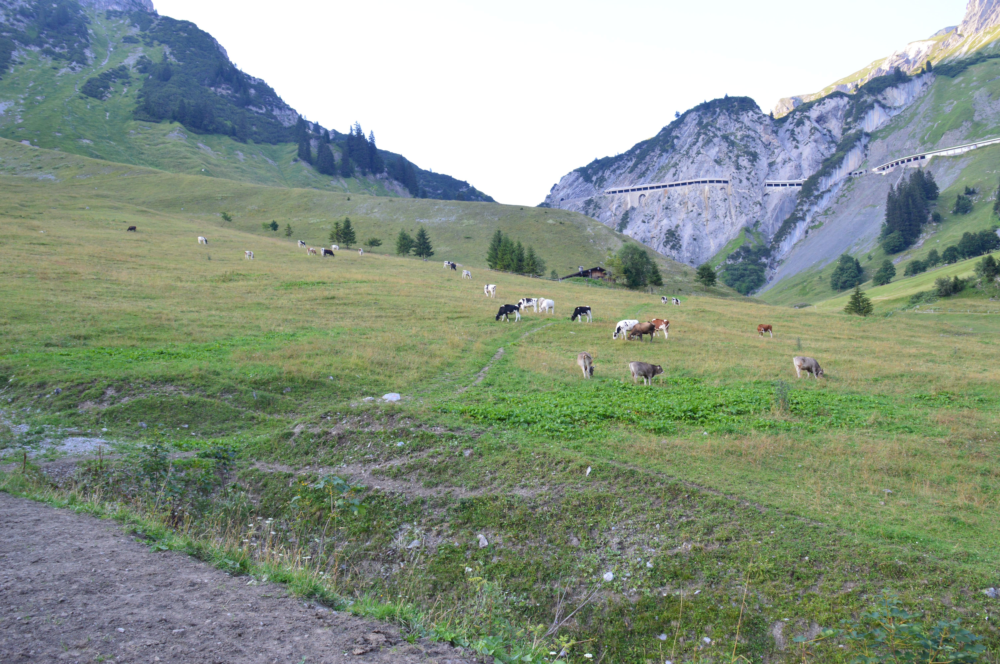

Österreich
Auszeit in den Bergen
Wir schreiben Tag 3 und bereits am Vorabend haben wir uns dazu entschieden, auszuschlafen. Zwar haben wir bereits den ersten Sonnenbrand zu beklagen, dieser hält uns aber nicht davon ab in Ruhe eine weitere Wanderung zu starten. Dieses Mal wählten wir extra die einfachste Route, welche uns einmal im Tal um Stuben herumführte. Also Schuhe an, Rucksack auf, Kamera angehängt und schon konnte die Tour beginnen.
Auch dieses Mal starteten wir auf der Pferdeweide, wobei wir nun den rechten Weg an Gabelung wählten. Er führte uns zwischen Büschen und Gräsern einfach geradeaus, wo wir die ganze Zeit parallel zum Fluss des Tals liefen, in dem alle Bergflüsse münden. Nachdem wir ein paar Meter auf einer Schotterstraße verbracht hatten, führte uns der Weg über den Tunnel der Bergstraße in einen kleinen Wald hinein. Nach einem kurzen spontanen Treffen mit ein paar Rehen, welche sich nicht ablichten lassen wollten, kamen wir an eine frei stehende Tränke. Wir vermuteten es schon von Beginn an, aber nun wussten wir endgültig, dass wir auf der Kuhweide unterwegs waren. Das, was im Winter die Skibegeisterten befahren, besuchen in den anderen Jahreszeiten Wanderer und Kühe. Nach der nächsten Abgrenzung mitten auf der Weide sollten wir dann auch die besagten Kühe endlich treffen. Wir hören sie zwar jeden Tag zu jeder Uhrzeit, da ihre Glocken durch das gesamte Tal schallen, doch bisher konnten wir sie nur von weitem sehen .. nun mussten wir mitten durch die Herde.
Wieder einmal interessierten sich die Tiere für die kleine gelbe Plastikblume an unserem Rucksack und durch die Tatsache, dass die Hörner einem immer näher kamen, um an einer Blume zu schnuppern, wurde einem auch bei einer Kuh etwas mulmig. Als wir die Herde durchquert hatten, gingen wir noch kurz über eine sehr „stabile“ Brücke und dann war unsere Tour auch schon beendet. Wir entschieden uns noch eben einen Abstecher nach links zu machen, da dort das Tal mit einem großen Wasserfall endete. Während wir noch einige Aufnahmen machten, sah man die Sonne bereits hinter den Bergen verschwinden, wodurch auch so langsam die Kälte bei einem ankam. Nach einem kurzen Rückweg ins Dorf wurde der Tag dann aber auch durch einen gemütlichen Abend auf dem Balkon beendet.
Tag 4 sollte der wohl ruhigste werden von allen. Nach dem, mittlerweile typischen, ausschlafen und frühstücken, fuhren wir mit unserem Auto in die nahegelegenen Dörfer. Alle waren recht klein und wirklich gemütlich, doch dann fanden wir etwas, was unser Interesse weckte .. eine Schnupperstunde im örtlichen Bogenschießen. Wir waren Feuer und Flamme und organisierten und noch für denselben Tag eine Teststunde. Es machte wirklich viel Spaß, auch wenn wir den ein oder anderen Feil so verschossen, dass man ihn nicht wiederfand. Am Ende der Stunde machte der Trainer uns noch auf einen weiteren Kurs aufmerksam, die „Parkour Reife“, mit der man auf Bogenparkouren selbstständig schießen darf. Zur Erklärung: Ein Parkour ist ein Weg auf offenem Gelände oder einem Wald, in dem mehrere Stationen mit Zielen sind. Je Station gibt es verschiedene Schusspositionen, von denen die jeweiligen Altersklassen schießen, wie zum Beispiel Kinder, die den vordersten Punkt oder auch Turnierschützen, die den hintersten Punkt und somit auch die „schwierigste“ Schussposition haben. Einen solchen Parkour darf man nur mit der jeweiligen Parkour Reife alleine bestreiten und um diese zu bekommen, muss man einen dafür angelegten Kurs besuchen. Für den Tag waren wir soweit erstmal fertig, aber waren uns sicher, dass wir auf das Angebot noch einmal zurückkommen würden.
 Auf dem Rückweg zu unserem Chalet entschieden wir uns noch durch einen sehr langen Tunnel zufahren, der unser Tal mit dem dahinter liegenden verbindet. Wir waren nämlich schon so einige Male daran vorbeigefahren und wollten es unbedingt einmal ausprobieren. Es war interessant, solange in einem Tunnel zu fahren, doch am Ende des Tunnels überraschte uns eine Schranke, bei der wir nun für unsere Tunnelfahrt bezahlen sollten. Nur durch Glück hatten wir noch genug Bargeld dabei um die Straße zu verlassen und über die Bergpassagen zurück in unser Tal zu kommen. Im Endeffekt muss man sagen, dass das ein teures Vergnügen war. Nach einer recht hohen Belastung unserer Bremsen, aufgrund der ganzen Bergstraßen, ließen wir wieder den Tag mit einem gemütlichen Abend auf dem Balkon ausklingen.
Auf dem Rückweg zu unserem Chalet entschieden wir uns noch durch einen sehr langen Tunnel zufahren, der unser Tal mit dem dahinter liegenden verbindet. Wir waren nämlich schon so einige Male daran vorbeigefahren und wollten es unbedingt einmal ausprobieren. Es war interessant, solange in einem Tunnel zu fahren, doch am Ende des Tunnels überraschte uns eine Schranke, bei der wir nun für unsere Tunnelfahrt bezahlen sollten. Nur durch Glück hatten wir noch genug Bargeld dabei um die Straße zu verlassen und über die Bergpassagen zurück in unser Tal zu kommen. Im Endeffekt muss man sagen, dass das ein teures Vergnügen war. Nach einer recht hohen Belastung unserer Bremsen, aufgrund der ganzen Bergstraßen, ließen wir wieder den Tag mit einem gemütlichen Abend auf dem Balkon ausklingen.